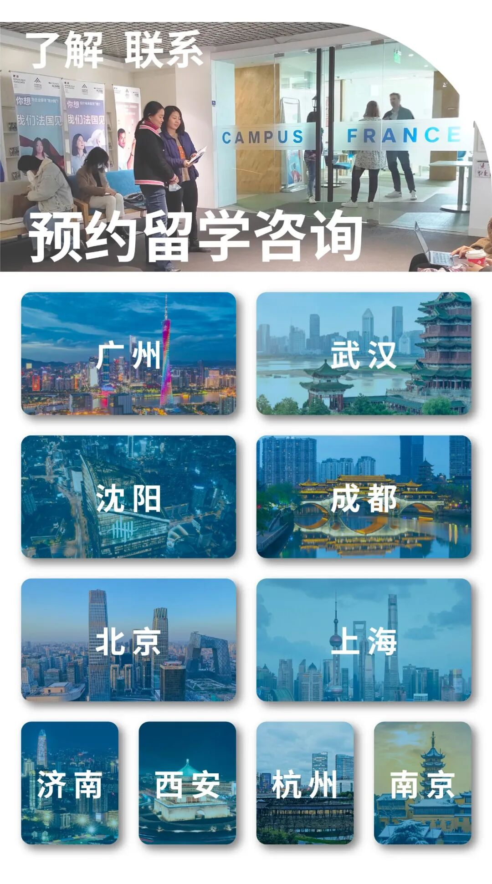

法国高等教育署的圣诞大礼来啦！
法国旅游发展署 ·

历时数月的筹备及开发，法国留学官方小程序终于千呼万唤始出来！更便捷、更清晰、更活泼，你想要的法国留学一手资讯一网打尽。一起来打开法国高等教育署送给大家的圣诞惊喜吧！
法国为何成为中国学生热门留学目的地？如何查找心仪的学校和专业？法国留学签证申请有哪些流程？怎样才能更好的融入法国？这里汇集了所有留法必备攻略，叫上你的小伙伴，一起愉快的开启法国留学之旅，去探寻可以受用终身的宝贵财富！

法国旅游发展署 ·
历时数月的筹备及开发，法国留学官方小程序终于千呼万唤始出来！更便捷、更清晰、更活泼，你想要的法国留学一手资讯一网打尽。一起来打开法国高等教育署送给大家的圣诞惊喜吧！
法国为何成为中国学生热门留学目的地？如何查找心仪的学校和专业？法国留学签证申请有哪些流程？怎样才能更好的融入法国？这里汇集了所有留法必备攻略，叫上你的小伙伴，一起愉快的开启法国留学之旅，去探寻可以受用终身的宝贵财富！
